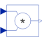

ProductOutput product of the two inputs |

|
Information
This information is part of the Modelica Standard Library maintained by the Modelica Association.
This blocks computes the output y as product of the two inputs u1 and u2:
y = u1 * u2;
Connectors (3)
| u1 |
Type: RealInput Description: Connector of Real input signal 1 |
|
|---|---|---|
| u2 |
Type: RealInput Description: Connector of Real input signal 2 |
|
| y |
Type: RealOutput Description: Connector of Real output signal |
Used in Examples (1)
|
Modelica.Mechanics.Rotational.Examples Drive train with clutch and brake |
Used in Components (4)
|
Modelica.Electrical.Analog.Sensors Sensor to measure the power |
|
|
Modelica.Electrical.Machines.Examples.ControlledDCDrives.Utilities Limited PI-controller with anti-windup and feed-forward |
|
|
Modelica.Electrical.Machines.Sensors Mechanical power = torque x speed |
|
|
Modelica.Electrical.MultiPhase.Sensors Multiphase instantaneous power sensor |